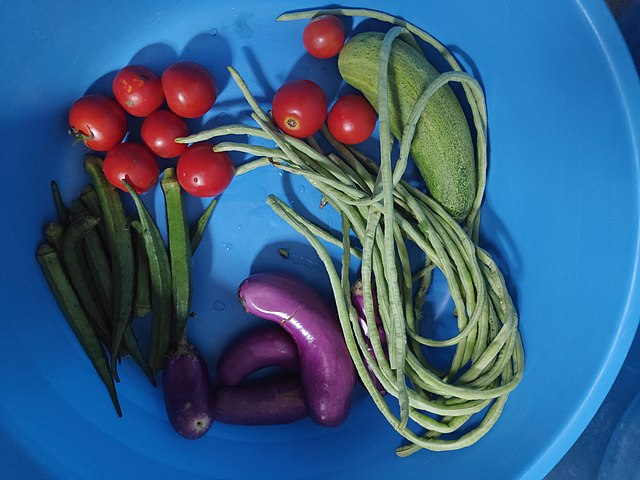

For Growers
Easy-to-use site

With a simple and intuitive design, our site is catered to provide the best user experience. Our site is easy to navigate through and provides users with features all with a click of a button. Sign-up today for a fast and easy way to donate those extra fruits and vegetables!
Rewards System & Community Building
Keep track of what you donate through the site. Get special, limited-edition badges for donating to display on your profile and get recognized by your community. Stay up-to-date with your local area through a news feed specialized for you.
Just list your extra food

... and we will notify you of local food banks and organizations that would like to collect your home-grown produce. Add your time availability to ensure a smoother pick-up.